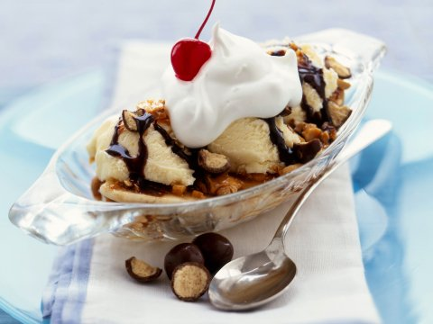

Bananensplit
_________________________________________________________________________
De bananensplit is een echte oude klassieker. De bananensplit is eigenlijk een zeer eenvoudig gerecht en is in een hand omdraai gemaakt.
Ingrediënten
- 2 bananen
- vanille-ijs
- wafen en/of chocolade snippers
- 75 gram pure chocolade van goede kwaliteit
- 25 gram melk chocolade van goede kwaliteit
- 50 ml slagroom
- 50 ml melk
Beredingswijze
- Haal het ijs 30 minuten voor gebruik uit de vriezer en zet het in de koelkast. Het ijs heeft dan meer smaak en is eenvoudiger te verwerken.
- Doe voor de chocolade saus de melk en slagroom in een pannetje, doe beide soorten chocolade erbij en laat dit op laag vuur smelten. Roer dit tot een gladde saus, doe er zonodig nog wat melk bij.
- Snijd de banaan in de lengte doormidden en leg de helften op een langwerpig schaaltje of op een bord. Schep met een ijslepel bolletjes ijs, en leg deze bij de banaan.
- Giet wat warme chocolade saus over het ijs en garneer met een wafel of met wat chocolade snippers bij de bananensplit. Of serveer de warme chocolade saus bij de bananensplit.

Tip: Lekker met hagelslag. Of andere kleine dingetjes die je erop kan doen